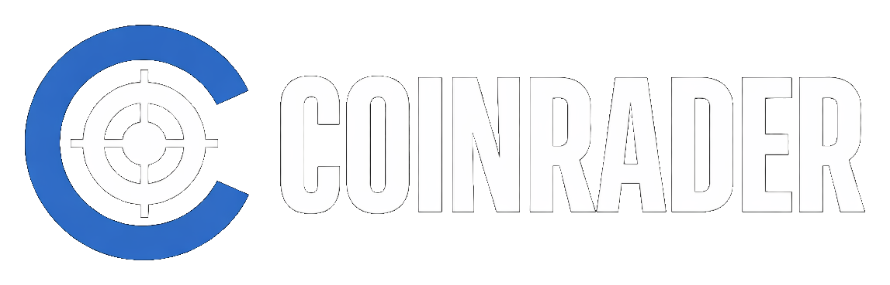

投資ガイド
 " target="_blank" rel="noopener noreferrer" class="tax-btn" data-ga="ex_cryptact_open">
無料で損益計算を試す →
" target="_blank" rel="noopener noreferrer" class="tax-btn" data-ga="ex_cryptact_open">
無料で損益計算を試す →
暗号資産投資の始め方
CoinRaderはデータに基づいた投資判断を支援するプラットフォームです。
「分析を利益に変える」ために必要な取引環境と、資産を守るためのステップを解説します。
📡
CoinRaderの分析方針:
当サイトは、個人の主観や感情的な煽りを一切排除し、AI（大規模言語モデル）によるニュース解析と、統計的なテクニカル指標のみを用いて構築されています。 「市場をありのままに、数字化して見る」ためのツールとして、開発者自身が投資判断の参考にするための厳格な基準を採用しています。
当サイトは、個人の主観や感情的な煽りを一切排除し、AI（大規模言語モデル）によるニュース解析と、統計的なテクニカル指標のみを用いて構築されています。 「市場をありのままに、数字化して見る」ためのツールとして、開発者自身が投資判断の参考にするための厳格な基準を採用しています。
広告・PR
当サイトは広告収益により運営されています。本ページを経由した口座開設等により収益が発生することがありますが、ユーザー様への追加費用は一切ございません。
当サイトは広告収益により運営されています。本ページを経由した口座開設等により収益が発生することがありますが、ユーザー様への追加費用は一切ございません。
ステップ1：目的に合う「口座」を持つ
まずは、自分の投資スタイルに合わせて最適な窓口を選びましょう。
人気No.1・初心者向け
コインチェック
アプリダウンロード数国内No.1
- スマホアプリが抜群に使いやすく、最初の1口座に最適。
- マネックスグループによる強固なセキュリティ基盤。
- 分析視点: ユーザー数が多いため、国内の市場心理を反映しやすい。
トレード・分析重視
みんなのコイン / FXTF
レバレッジ取引 / 高機能ツール
- みんなのコイン: 各種手数料0円でレバレッジ取引が可能。
- FXTF: 唯一無二の「MT4」対応。独自インジケーターの検証に。
- 高度な分析を実際の利益に変えるための「攻め」の口座。
信頼・低コスト重視
GMOコイン / BITPOINT
手数料の安さ国内トップクラス
- GMOコイン: 即時入金・送金手数料が無料。オリコン満足度No.1。
- BITPOINT: 板取引の手数料が無料。SBIグループが運営。
- 長期保有（ガチホ）で資産を確実に積み上げる「守り」の口座。
ステップ2：セキュリティの徹底
暗号資産は自分の手で守るものです。以下の2点は必ず設定しましょう。
- 2段階認証の必須化: SMS認証ではなく、Google Authenticator等の専用アプリを使いましょう。
- 資産の分散管理: 一つの取引所に全財産を置かず、用途（売買用・長期保存用）で分けましょう。
ステップ3：客観的なデータ分析（当サイトの活用）
口座を開設したら、感情で売買する前に [CoinRader ホーム](/) をチェックしてください。
- AIセンチメント: 今の市場は「パニック（恐怖）」か「総楽観」かを確認する。
- RSI: 買いたいと思った瞬間、統計的に「買われすぎ」ていないかをチェックする。
ステップ4：損益管理・税金対策
複数の口座で取引を始めると、損益の把握が困難になります。早い段階でのツール導入が成功の鍵です。
PROFESSIONAL MANAGEMENT TOOL
正確な損益計算を「自動化」する
国内利用者数No.1の「クリプタクト」は、100以上の取引所に対応。取引履歴をアップロードするだけで、AIとツールがあなたの含み益や税金を1円単位で可視化します。
Cryptact
※本ページの内容は投資勧誘を目的としたものではありません。提供情報の正確性には細心の注意を払っておりますが、最終的な投資判断はご自身の責任で行ってください。